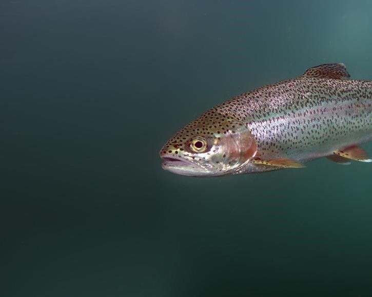

Fisk i akvakultur
Dyrenes Beskyttelse mener, at der skal være et stasligt tilsyn med dyrevelfærden for fisk i akvakultur

Hvad er akvakultur?
Akvakultur betyder opdræt af fisk, skaldyr og andre organismer i vand. Fisk udgør ifølge Fiskeristyrelsen 38.530 tons om året (79 procent), muslinger 10.227 tons om året (21 procent) og havtang 8 tons om året (0,02 procent). Fiskene opdrættes på mange forskellige måder; i havet i netbure, på land i damme, og indendørs i bassiner.
0
personer har allerede skrevet under.
Nu er det din tur!
Stop forskælsbehandling
Fisk er sansende væsener, som kan føle smerte og stress. Derfor skal staten naturligvis føre tilsyn med, at fisk, der holdes i akvakultur, har gode dyrevelfærdsvilkår. Velfærdstilsyn skal være uanmeldt og risikobaseret.
Fisk, der opdrættes, har ikke de samme rettigheder som andre dyr, der bruges i fødevareproduktionen. Hvor andre husdyr, for eksempel køer, grise og kyllinger, beskyttes af et lovpligtigt tilsyn med deres velfærd, er der ingen krav om tilsyn med fiskenes velfærd. Der er heller ingen specifikke krav til, hvor meget plads den enkelte fisk skal have, eller hvordan vandkvaliteten skal være.
Dyrenes Beskyttelse mener, at det er uforsvarligt, at man i Danmark har ca. 50 millioner fisk i hav- eller dambrug, uden at vi som samfund tager ansvar for deres velfærd.
Fakta om dansk akvakultur
- Den danske produktion er på ca. 45.500 ton fisk pr. år.
- De fisk, der oftest opdrættes i Danmark, er ørred og laks.
- Der findes ingen tilsyn med fiskenes velfærd i akvakulturen.
For de fisk, der ikke er økologiske:
- Der er ingen lovgivning om, hvor tæt fisk må opdrættes i akvakulturen.
- Der er ingen lovgivning om vandkvaliteten, fiskene holdes i.
- Der er ingen lovgivning om indretningen af de beholdere, netbure og damme, som fiskene opdrættes i.
Ny strategi for akvakultur skal følges tæt
Danmark fik i oktober 2022 en ny strategi for akvakultur. Baggrunden for strategien er, at alle EU's medlemslande i 2022 skal formulere nationale strategier for udviklingen i akvakultursektoren.
Dyrenes Beskyttelse er glade for, at der i den nye strategi er kommet mere fokus på dyrevelfærd.
Strategien slår fast:
- at fisk føler smerte og har velfærdsbehov
- at fokus på fiskevelfærd hidtil har været for beskedent
- at produktion af fisk skal ske på bæredygtig vis, og at dyrevelfærd er en del af begrebet bæredygtighed
- at der skal laves en undersøgelse af eksisterende viden om fiskevelfærd i danske akvakulturer
- at undersøgelserne er en indledning til at opstille indikatorer for fiskevelfærd
Det er alt sammen ændringer, der er kommet til siden sidste akvakulturstrategi; blandt andet på baggrund af høringssvar fra Dyrenes Beskyttelse.
Selv om velfærdstilsyn med fisk har været et af Dyrenes Beskyttelses helt store ønsker til strategien, er det ikke skrevet konkret ind i strategien.
Læs hele Dyrenes Beskyttelses reaktion på den nye strategi her.
Fra strategi til dyrevelfærd:
Den nye strategi er et godt udgangspunkt for at arbejde med dyrevelfærden i akvakultur, og Dyrenes Beskyttelse vil følge arbejdet med at få strategien omsat til dyrevelfærd.
Vigtigste ønsker:
- at der skal være velfærdstilsyn for alle fisk i akvakultur
- at man med afsæt i Dyrevelfærdsloven laver artspecifikke krav for dyrevelfærd for de mest almindelige arter i akvakultur i Danmark, for eksempel regnbueørred og laks
Derudover ønsker vi:
- at økologisk opdræt af fisk styrkes frem for mere intensive produktionsformer
- at akvakulturproduktionen i Danmark skal foretage et skift fra produktion af rovfisk til planteædende fisk og andre organismegrupper, for eksempel havtang
TEST DIN VIDEN
Hvor meget ved du egentlig om fisk i akvakultur?
Bliv oplyst: